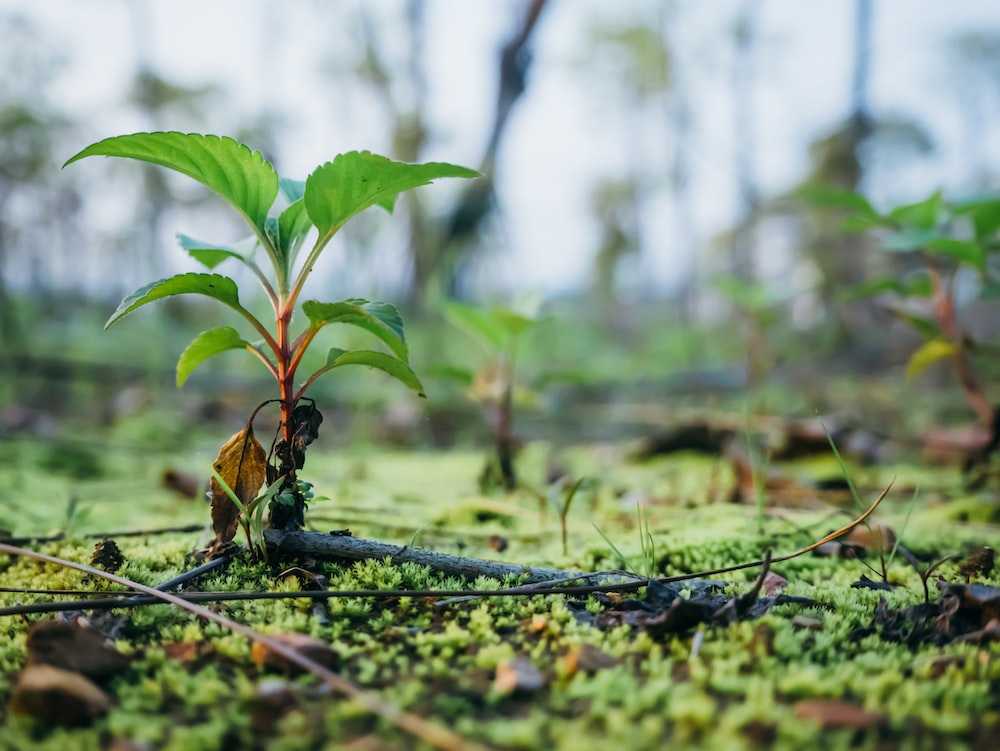
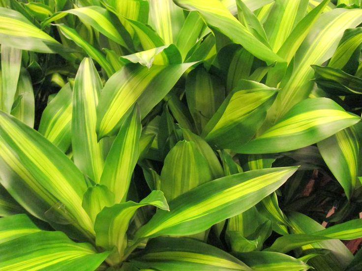

The Miracle of Photosynthesis
At the heart of plant life lies the miracle of photosynthesis. Plants, utilizing the chlorophyll in their cells, have mastered the art of converting sunlight, carbon dioxide, and water into energy-rich sugars and oxygen. This vital process is not only the foundation of their existence but also the primary source of oxygen on Earth, making plants the ultimate oxygen factory.
The Breathtaking Diversity
With over 350,000 known species and countless more yet to be discovered, the world of plants is a biodiversity treasure trove. From towering sequoias to delicate orchids, and from the ancient ginkgo tree to the resilient succulent, plants have evolved a stunning array of shapes, sizes, and strategies to thrive in various ecosystems.
For instance, the prickly cactus, native to arid deserts, has adapted to store water in its fleshy stems, ensuring survival in extreme dry conditions. In contrast, the pitcher plant, found in nutrient-poor soils, has evolved carnivorous tendencies, luring insects into its specialized traps to supplement its die.
Healing Power of Botanicals
Plants have long been humanity's pharmacy. Traditional medicine systems worldwide have harnessed the therapeutic potential of plants for centuries. Even in the modern age of pharmaceuticals, many drugs are derived from plant compounds. Aspirin, for example, traces its roots back to willow bark, while the anti-malarial drug quinine comes from the bark of the cinchona tree. Plants continue to be a source of inspiration for medical research, holding the promise of new treatments and cures.
Sustenance and Nutrition
Plants are the cornerstone of our diet. Grains like rice, wheat, and corn provide the bulk of our calories, while fruits, vegetables, nuts, and legumes offer essential nutrients. They form the basis of a balanced diet, supplying vitamins, minerals, and dietary fiber that are essential for our health and well-being. Moreover, plant-based diets are gaining popularity for their environmental sustainability and potential health benefits.
Artistry in Nature
Beyond their practical uses, plants are celebrated for their aesthetic and artistic value. Gardens, from traditional Japanese Zen gardens to the exuberant colors of botanical gardens, are living canvases that inspire creativity and provide sanctuary from the hustle and bustle of daily life. The art of bonsai, with its miniature trees meticulously sculpted over decades, exemplifies the profound connection between humans and plants.

Guardians of the Environment
In an era of climate change and environmental challenges, plants play an indispensable role in mitigating the effects of these global crises. Forests, for example, sequester vast amounts of carbon dioxide, helping to regulate the Earth's climate. Conserving natural habitats and engaging in reforestation efforts are essential steps in our fight against climate change.
Plants, often overshadowed by more charismatic creatures, are the silent architects of our world. They provide us with the air we breathe, the food we eat, and the inspiration we seek. As we delve deeper into our understanding of these remarkable organisms, let us not forget to marvel at the beauty and complexity of the plant kingdom. It is a world that not only enriches our lives but is also essential for the survival of life on Earth.